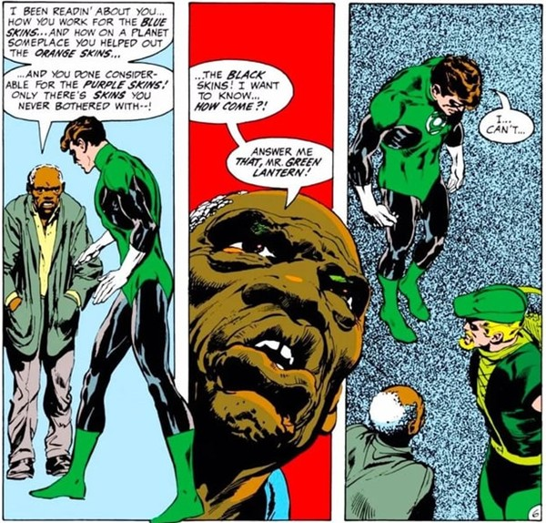

Cosmic Cop to Conscience of a Generation

As America faced civil rights struggles, war protests, and deep cultural divides in the 1960s and ’70s, Hal Jordan’s stories began to reflect the real world
No longer just a cosmic enforcer, Hal teamed up with the fiery Green Arrow to confront racism, poverty, drug abuse, and even political corruption. In the groundbreaking Green Lantern/Green Arrow series, readers saw heroes challenge not just villains, but broken systems.
One powerful moment: a Black man asks Hal why he’s helped “blue, orange, and purple skins,” but ignored Black people on Earth. It was a wake-up call, for Hal and his readers.
These stories marked a turning point. Superheroes weren’t just saving the day—they were questioning power, reflecting society, and growing up with their audience.